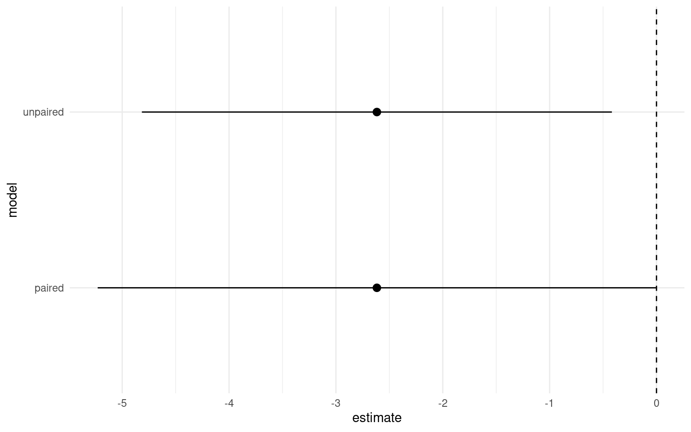

19 Paired tests
19.0.1 Packages
The structure of our linear model so far has produced the output for a standard two-sample Student’s t-test. However, when we first calculated our estimates by hand - we started by making an average of the paired differences in height. This is the equivalent of a paired t-test.
19.1 Understanding the data
Before analysis, ensure you understand what each variable represents.
How are “Cross” and “Self” plants related within pairs?
Why might it make sense to treat “pair” as a factor rather than a numeric variable?
Question: Does this design look like independent samples, or are observations linked in some way? e.g. which analysis is more appropriate a two-sample or paired test?
From the original experiment design we know that for each “pair” the plants share one parent - and are either the result of having been self-crossed or cross-fertilised to an unrelated plant.
Pair is by default numeric in our dataframe - but this doesn’t make sense for our analysis as each pair is independent and unrelated. It makes more sense to treat each pair as an unrelated group (which makes it categorical)
The experiment is designed to look at the effect of inbreeding between pairs of plants that share at least some genetic relatedness. For this reason the paired design makes sense as some of the variance in heights will be assigned to the pairs.
Call:
lm(formula = height ~ type + factor(pair), data = darwin)
Residuals:
Min 1Q Median 3Q Max
-5.4958 -0.9021 0.0000 0.9021 5.4958
Coefficients:
Estimate Std. Error t value Pr(>|t|)
(Intercept) 21.7458 2.4364 8.925 3.75e-07 ***
typeSelf -2.6167 1.2182 -2.148 0.0497 *
factor(pair)2 -4.2500 3.3362 -1.274 0.2234
factor(pair)3 0.0625 3.3362 0.019 0.9853
factor(pair)4 0.5625 3.3362 0.169 0.8685
factor(pair)5 -1.6875 3.3362 -0.506 0.6209
factor(pair)6 -0.3750 3.3362 -0.112 0.9121
factor(pair)7 -0.0625 3.3362 -0.019 0.9853
factor(pair)8 -2.6250 3.3362 -0.787 0.4445
factor(pair)9 -3.0625 3.3362 -0.918 0.3742
factor(pair)10 -0.6250 3.3362 -0.187 0.8541
factor(pair)11 -0.6875 3.3362 -0.206 0.8397
factor(pair)12 -0.9375 3.3362 -0.281 0.7828
factor(pair)13 -3.0000 3.3362 -0.899 0.3837
factor(pair)14 -1.1875 3.3362 -0.356 0.7272
factor(pair)15 -5.4375 3.3362 -1.630 0.1254
---
Signif. codes: 0 '***' 0.001 '**' 0.01 '*' 0.05 '.' 0.1 ' ' 1
Residual standard error: 3.336 on 14 degrees of freedom
Multiple R-squared: 0.469, Adjusted R-squared: -0.09997
F-statistic: 0.8243 on 15 and 14 DF, p-value: 0.6434| term | estimate | std.error | statistic | p.value |
|---|---|---|---|---|
| (Intercept) | 21.745833 | 2.436389 | 8.9254352 | 0.0000004 |
| typeSelf | -2.616667 | 1.218195 | -2.1479875 | 0.0497029 |
| pair2 | -4.250000 | 3.336163 | -1.2739185 | 0.2234352 |
| pair3 | 0.062500 | 3.336163 | 0.0187341 | 0.9853176 |
| pair4 | 0.562500 | 3.336163 | 0.1686069 | 0.8685176 |
| pair5 | -1.687500 | 3.336163 | -0.5058206 | 0.6208532 |
| pair6 | -0.375000 | 3.336163 | -0.1124046 | 0.9120984 |
| pair7 | -0.062500 | 3.336163 | -0.0187341 | 0.9853176 |
| pair8 | -2.625000 | 3.336163 | -0.7868320 | 0.4444963 |
| pair9 | -3.062500 | 3.336163 | -0.9179707 | 0.3741786 |
| pair10 | -0.625000 | 3.336163 | -0.1873410 | 0.8540813 |
| pair11 | -0.687500 | 3.336163 | -0.2060750 | 0.8396990 |
| pair12 | -0.937500 | 3.336163 | -0.2810114 | 0.7828120 |
| pair13 | -3.000000 | 3.336163 | -0.8992366 | 0.3837329 |
| pair14 | -1.187500 | 3.336163 | -0.3559478 | 0.7271862 |
| pair15 | -5.437500 | 3.336163 | -1.6298663 | 0.1254148 |
Note that I have made pair a factor - pair 2 is not greater than pair 1 - so it does not make sense to treat these as number values.
The table of coefficients suddenly looks a lot more complicated! This is because now the intercept is the height of the crossed plant from pair 1:
The second row now compares the average heights difference of Crossed and Selfed plants when they are in the same pair
rows three to 16 compare the average difference of each pair (Crossed and Selfed combined) against pair 1
Again the linear model computes every possible combination of t-statistic and P-value, however the only one we care about is the difference in Cross and Self-pollinated plant heights. If we ignore the pair comparisons the second row gives us a paired t-test. ‘What is the difference in height between Cross and Self-pollinated plants when we hold pairs constant.’
19.2 Activity 1: Compare paired model designs
We previously compared the difference in average plant heights between crossed and fertilsied plants, now let’s generate the confidence intervals for the paired t-test and compare them to our unpaired t-test.
| term | estimate | std.error | statistic | p.value | conf.low | conf.high |
|---|---|---|---|---|---|---|
| (Intercept) | 21.745833 | 2.436389 | 8.925435 | 0.0000004 | 16.520298 | 26.9713683 |
| typeSelf | -2.616667 | 1.218195 | -2.147988 | 0.0497029 | -5.229434 | -0.0038992 |
We can see that estimate of the mean difference is identical but the 95% confidence intervals are now slightly different. So in this particular version we have actually increased our level of uncertainty by including the pair parameter.
m1 <- lm(height ~ type, data = darwin) |>
broom::tidy( conf.int=T) |>
slice(2:2) |>
mutate(model="unpaired")
m2 <- lm(height ~ type + factor(pair), data = darwin) |>
broom::tidy(conf.int=T) |>
slice(2:2) |>
mutate(model="paired")
rbind(m1,m2) |>
ggplot(aes(model, estimate))+
geom_pointrange(aes(ymin=conf.high, ymax=conf.low))+
geom_hline(aes(yintercept=0), linetype="dashed")+
theme_minimal()+
coord_flip()
What does our experiment actually test biologically, and what does it all mean?
Our new model has wider confidence intervals, and a very poor adjusted R-squared, so which model should we be using?
In this case we had a good a priori reason to include pair in our model - we wanted to at least partially control for genetic background.
Our new model looks worse, but actually gives us important information - despite that fact that variance explained is poor (indicating that plant height is a noisy trait probably influence by lots of factors outside of genetic background), we still find that on avergage a statistically significant effect of inbreeding. Our wider confidence intervals represent genuine uncertainty about the true average effect of inbreeding depression.
19.3 Effect sizes
We have discussed the importance of using confidence intervals to talk about effect sizes. When our 95% confidence intervals do not overlap the intercept, this indicates we have difference in our means which is significant at \(\alpha\) = 0.05. More interestingly than this it allows us to talk about the ‘amount of difference’ between our treatments, the lower margin of our confidence intervals is the smallest/minimum effect size. On the response scale of our variables this is very useful, we can report for example that there is at least a 0.4 inch height difference between self and crossed fertilised plants at \(\alpha\) = 0.05.
19.4 Activity 2: Write-up
Q. Can you write a summary of the Results?
We analysed the difference in heights between selfed and cross-pollinated maize plants using a paired analysis of 15 pairs of plants. On average we found plants that have been cross pollinated (20.2 inches [18.3, 22], (mean [95% CI])) were taller than the self-pollinated plants (t(14) = -2.148, p = 0.0497), with a mean difference in height of 2.62 [0.004, 5.23] inches .
19.5 Summary
This chapter finally allowed us to calculate P-values and test statistical significance for our experiments using linear models. We also compared the linear model structures for producing a paired vs. unpaired t-test.
A single experiment is never definitive, and a reliance on reporting P-values is uninformative and can be misleading. Instead reporting estimates and confidence intervals allows us to report our levels of uncertainty, and provides results which are more informative for comparative studies.